지적기사 (2013-06-02 기출문제)
1과목: 지적측량
1. 시ㆍ도지사가 지적삼각점성과표에 기록ㆍ관리하여야 하는 사항에 해당하지 않는 것은?
- 기준 원점명
- 좌표 및 표고
- 표지의 재질
- 자오선수치
(정답률: 72%)

2. 지적삼각점측량의 계산에서 진수는 몇 자리 이상을 사용하는가?
- 6자리 이상
- 7자리 이상
- 8자리 이상
- 9자리 이상
(정답률: 91%)
3. 거리를 측정할 때 정오차가 발생할 수 있는 원인으로 거리가 먼 것은?
- 온도보정을 하지 않은 때
- 장력보정을 하지 않은 때
- 처짐보정을 하지 않은 때
- 표고보정을 하지 않은 때
(정답률: 62%)
4. 수평각 관측시 경위의의 기계오차 소거방법으로 틀린 것은?
- 회전축에 대하여 망원경의 위치가 편심되어 있어 발생하는 오차는 망원경의 정ㆍ반 관측을 평균한다.
- 시준축과 수평측이 직교하지 않아 발생하는 오차는 망원경의 정ㆍ반 관측을 평균한다.
- 수평축과 연직축이 직교하지 않아 발생하는 오차는 망원경의 정ㆍ반 관측을 평균한다.
- 기포관축과 연직축이 직교하지 않아 발생하는 오차는 망원경의 정ㆍ반 관측을 평균한다.
(정답률: 46%)
5. 극좌표와 직각좌표의 관계식이 틀린 것은?
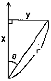
- x=r×cosθ
- y=r×sinθ
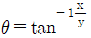
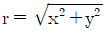
(정답률: 86%)
6. 전파기측량방법에 따라 다각망도선법으로 지적삼각보조점측량을 할 때 1도선의 거리는 얼마 이하로 하여야 하는가?
- 0.5km 이하
- 1km 이하
- 3km 이하
- 4km 이하
(정답률: 83%)
7. 지적확정측량결과도 작성 시 포함하여야 할 사항으로 거리가 먼 것은?
- 경계점 간 계산거리 및 실측거리
- 경계에 지상구조물 등이 거리는 경우에는 그 위치현황
- 확정된 필지의 경계(경계점좌표룰 전개하여 연결한 선 및 면적)
- 지적기준점 및 그 번호와 지적기준점 간 방위각 및 거리
(정답률: 30%)
8. 평판측량방법에 따른 세부측량을 시행하는 경우 기지점을 기준으로 하여 지상경계선과 도사경계선의 부합 여부를 확인하는 방법에 해당하지 않는 것은?
- 현형법
- 도상원호교희법
- 거리비교확인법
- 방사법
(정답률: 67%)
9. 경위의측량방법에 따른 지적삼각점의 수평각 관측 시 윤곽도로 옳은 것은?
- 0도 , 60도, 120도
- 0도 , 45도, 90도
- 0도, 90도, 180도
- 0도, 30도, 60도
(정답률: 85%)
10. 우리나라의 토지조사사업 당시에 적요된 측지학적 요소가 모두 옳게 나열된 것은?
- 원점축척계수 1.0000, 가우스상사이중투영, 등각투영
- 원점축척계수 0.9996, 가우스크루거투영, 등각투영
- 원점축척계수 1.0000, 가우스상사이중투영, 등적투영
- 원점축척계수 0.9996, 가우스크루거투영, 등적투영
(정답률: 75%)
11. 평판측량방법에 따른 세부측량을 교회법으로 하는 경우의 기준으로 옳은 것은?
- 전반교회법 또는 후방교회법을 사용한다.
- 2방향 이상의 교회를 따른다.
- 광파조준의를 사용하는 경우 방향선의 도상길이는 30cm 이하로 한다.
- 방향각의 교각은 30도 이상 120도 이하로 한다.
(정답률: 53%)
12. 주준의(앨리데이드)가 갖추어야 할 조건으로 틀린 것은?
- 기포관 측의 자의 밑면과 평행이어야 한다.
- 시준판의 눈금은 정확하여야 한다.
- 시준판을 세웠을 때 밑면에 평행하여야 한다.
- 시준면은 조준의의 밑면에 직교되어야 한다.
(정답률: 53%)
13. 경계점좌표등록부를 갖춰두는 지역의 측량에 대한 설명으로 옳은 것은?
- 경계점좌표등록부를 갖춰 주는 지역에 있는 각 필지의 경계점을 측정할 때에는 도선법 또는 원호법에 따라 좌표를 산출하여야 한다.
- 경계점좌표등록부를 갖춰 주는 지역에 있는 각 필지의 경계점 측점번호는 오른쪽 위에서부터 왼쪽으로 경계를 따라 일련번호를 부여한다.
- 경계점좌표등록부를 갖춰 주는 지역의 경계점에 접속하여 지적확정측량을 하는 경우 동일한 경계점의 측량성과의 차이는 0.10m 이내여야 한다.
- 경계점좌표등록부를 갖춰 주는 지역의 경계점에 접속하여 지적확정측량을 하는 경우 동일한 경계점의 측량성과가 서로 다를 때에는 새로이 측량한 성과를 좌표로 결정한다.
(정답률: 50%)
14. 다음 중 고대 지적 및 측량사와 가장 거리가 먼 것은?
- 테베(Thebes)의 고분벽화
- 고대 수메르(Sumer)지방의 점토판
- 고태 인도 타지마할 유적
- 고대 이집트의 나일강변
(정답률: 74%)
15. 경위의측량방법에 따른 세부측량의 관측 및 계산 기준으로 틀린 것은?
- 도선법 또는 방사법에 따른다.
- 1방향각의 수평각 측각공차는 40초 이내이어야 한다.
- 관측은 20초독 이상의 경위의를 사용한다.
- 연직각의 관측은 정반으로 1회 관측하여 그 교차가 5분 이내일 때에 그 평균치를 연직각으로 한다.
(정답률: 44%)
16. 그림과 같이
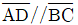
인 □ABCD를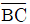
에 수직인 직선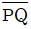
로 분할하여 □ABPQ의 면적이 2200m2가 되도록 하는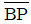
의 길이는? (단,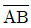
=20m, ∠ABP(β)=120°)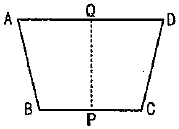
- 117.15m
- 122.02m
- 228.66m
- 249.03m
(정답률: 75%)
17. 우리나라 토지조사사업 당시 기선측량을 실시한 지역은?
- 7개소
- 10개소
- 13개소
- 19개소
(정답률: 89%)
18. 지적삼각보조점측량을 Y망으로 실시하여, (1)도선의 거리의 합계가 1654.15m이었을 때, 연결오차는 최대 얼마 이하로 하여야 하는가?
- 0.02m 이하
- 0.04m 이하
- 0.06m 이하
- 0.08m 이하
(정답률: 45%)
19. 좌표면적계산법에 따른 면적측정을 하는 경우 면적을 정하는 단위 기준으로 옳은 것은?
- 10분의 1제곱미터 단위로 정한다.
- 100분의 1제곱미터 단위로 정한다.
- 1000분의 1제곱미터 단위로 정한다.
- 10000분의 1제곱미터 단위로 정한다.
(정답률: 53%)
20. 다각망선도법에 따른 지적도근점의 각도관측을 배각법에 따르는 경우, 1등도선의 변의 수가 폐색변을 포함하여 16변일 때 폐색오차는 얼마 이내이어야 하는가?
- ±60초 이내
- ±80초 이내
- ±100초 이내
- ±120초 이내
(정답률: 67%)
2과목: 응용측량
21. 수준측량의 야장기입법 중 중간점(I.P)이 많을 때 가장 적합한 방법은?
- 승강식
- 고차식
- 기고식
- 방사식
(정답률: 81%)
22. 터널의 준공을 위한 변형조사측량에 해당되지 않는 것은?
- 중심측량
- 고저측량
- 단면측량
- 삼각측량
(정답률: 50%)
23. 다음 중 지형도의 이용과 가장 거리가 먼 것은?
- 연직단면의 작성
- 저수용량, 토공량의 산정
- 면적의 도상 측정
- 지적도 작성
(정답률: 38%)
24. 수준측량에서 발생하는 오차 중에서 기계적 원인으로 발생하는 오차가 아닌 것은?
- 시준시 기포가 정중앙에 있지 않다.
- 기포관의 곡률이 균일하지 않다.
- 레벨의 조정이 불완전하다.
- 기포가 둔감하다.
(정답률: 53%)
25. 실거리가 500m인 도로구간에 대해 항공사진측량을 실시하여 고도 1km 상공에서 촬영을 하였다면 사진에 나타난 도로의 길이는? (단, 카메라 초점거리는 150m이다.)
- 5.0m
- 7.5m
- 13.3m
- 30.0m
(정답률: 37%)
26. 원격탐사에 관한 설명으로 옳지 않은 것은?
- 항공기나 인공위성을 주로 이용한다.
- 탐사 세선에는 수동적 센서와 능동적 센서가 있다.
- 전자파의 많은 파장대 중 가시광선을 이용하는 것만을 의미한다.
- 관측자료가 수치로 기록되어 판독이 자동적이고 정향화가 가능하다.
(정답률: 75%)
27. 초점거리가 150mm, 사진크기가 23cm×23cm, 비행고도가 7500m인 항공사진의 실체모델 하나의 유효면적은? (단, 종중복도는 60%, 횡중복도는 30%이다.)
- 37.03km2
- 41.03km2
- 49.03km2
- 60.23km2
(정답률: 60%)
28. 완화곡선 중
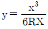
의 식으로 나타낼 수 있는 것은? (단, R:반지름, X:완화곡선 종점)- 3차포물선
- 클로소이드
- 렘니스케이트
- 복곡선
(정답률: 60%)
29. 곡선 반지름(R)=150m, 교각(I)=90°인 단곡선에서 기정으로부터의 교점(I.P)의 추가거리가 1273.45m일 때, 곡선 시점(B.C)의 추가거리는?
- 1034.25m
- 1123.45m
- 1245.56m
- 1368.86m
(정답률: 71%)
30. GPS측량방법 중 후처리방식이 아닌 것은?
- Static방법
- Kinematic방법
- Pseudo-Kinematic방법
- Real-Time Kinematic방법
(정답률: 62%)
31. 노선측량에서 일반적으로 종단면도에 기입되는 항목이 아닌 것은?
- 관측점간 수평거리
- 절토 및 성토량
- 계획선의 경사
- 관측점의 지반고
(정답률: 60%)
32. 내부표정에 대한 설명으로 옳은 것은?
- 기계좌표계→지표좌표계→사진좌표계로 변환
- 지표좌표계→기계좌표계→사진좌표계로 변환
- 지표좌표계→사진좌표계→기계좌표계로 변환
- 기계좌표계→사진좌표계→지표좌표계로 변환
(정답률: 29%)
33. 터널 내에서 A점의 좌표 및 표고가 (1328, 810, 86), B점의 좌표 및 표고가 (1734, 589, 112)일 때 A, B점을 연결하는 터널을 굴진할 경우 이 터널의 경사거리는? (단, 좌표의 단위는 m이다.)
- 341.5m
- 363.1m
- 421.6m
- 463.0m
(정답률: 65%)
34. 항공삼각측량에서 기본단위가 사진으로, 블록 내의 각 사진 상에 관측된 기준점, 접합점의 사진좌표를 이용하여 최소제곱법으로 사진의 외부표정요소 및 접합점의 최확값을 결정하는 방법은?
- 다항식법
- 독립 모델법
- 광속조정법
- 그루버법
(정답률: 78%)
35. 다음 중 수준점에 대한 설명으로 틀린 것은?
- 우리나라는 국도 및 중요한 간선 도로에 따라 약 2km마다 2등수준점을 설치하였다.
- 수준점의 표고는 지오이드로부터의 높이를 말하며, 레벨측량으로 구한다.
- 수준점 표석의 상단 가운데에는 십자선이 표시되어 있다.
- 우리나라 수준점의 표고의 기준점은 수준원점이다.
(정답률: 46%)
36. 다음 중 지형의 표시 방법이 아닌 것은?
- 점고법
- 우모법
- 평행선법
- 등고선법
(정답률: 62%)
37. 등고선 측정 방법 중 지성선 상의 중요한 지점의 위치와 표고를 측정하여 이 점들을 기준으로 하여 등고선을 삽입하는 방법은?
- 횡단점법
- 종단점법
- 지형점법
- 방안점법
(정답률: 63%)
38. 비행속도 시속 180km/h 인 항공기에서 초점거리 150mm인 카메라로 어느 시가지를 촬영한 항공사진이 있다. 허용흔들림량이 사진상에서 0.01mm, 최장 허용 노출시간이 1/250초, 사진크기 23cm×23cm 일 때, 이 사진 상에서 연직점으로부터 6cm 떨어진 위치에 있는 건물의 사진상 변위가 0.26m라면 이 건물의 실제높이는?
- 60m
- 90m
- 115m
- 130m
(정답률: 48%)
39. 곡선장이 104.7m이고, 곡선반지름 R=100m일 때, 곡선시점과 곡선종점간의 곡선거리와 직선거리(현장)의 차이는?
- 4.7m
- 6.5m
- 10.9m
- 18.1m
(정답률: 50%)
40. GPS 측량에서 사이클 슬립(cycle slip)의 주된 원인은?
- 높은 위성의 고도
- 높은 신호감도
- 낮은 신호잡음
- 지형ㆍ지물에 의한 신호단절
(정답률: 70%)
3과목: 토지정보체계론
41. 도시정보시스템에 대한 설명으로 틀린 것은?
- UIS라고 하며 Urban Information System의 약어이다.
- 토지와 건물의 속성만을 입력할 수 있는 시스템이다.
- 도시종합관리의 기반 시스템으로 시정 업무의 전반에 활용할 수 있도록 한다.
- 도시 정책에 관한 정보관리가 용이하며 기초 정책 통계를 이용한 각종 도시계획의 효율적ㆍ과학적 수립이 가능하다.
(정답률: 60%)
42. 경계선의 이중입력으로 서로 다른 플리곤이 중첩되어 발생하는 불필요한 풀리곤을 무엇이라고 하는가?
- 오버슈트(overshoot)
- 노드중복(overlap)
- 슬리버(sliver)
- 스파이크(spike)
(정답률: 67%)
43. 시ㆍ도지사는 시ㆍ도의 대장전산자를 시ㆍ군ㆍ구의 대장 전산자료와 항상 일치하도록 하기 위하여 언제를 기준으로 시ㆍ군ㆍ구의 지적전산자료를 시ㆍ도의 지적전산정보시스템에 반영하여야 하는가?
- 매년 말
- 매반기 말
- 매분기 말
- 매월 말
(정답률: 43%)
44. 지적전산자료를 활용한 정보화사업에 포함되지 않는 것은?
- 임야대장의 전산화 업무
- 수치지도와 지적도면의 중첩 분석 결과 저장 업무
- 토지대장의 전산화 업무
- 정보처리시스템을 통한 지적도의 기록ㆍ저장 업무
(정답률: 36%)
45. 아래와 같은 특징을 갖는 논리적인 데이터베이스 모델은?
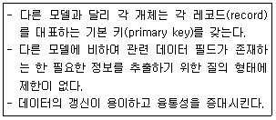
- 계층형 모델
- 네트워크형 모델
- 관계형 모델
- 객체지향형 모델
(정답률: 59%)
46. 지적도 전산화 작업의 목적으로 옳지 않은 것은?
- 지적도의 대량 생산 및 배포
- 대민서비스의 질적 수준 향상
- 정확한 지적측량자료의 이용
- 지적도 원형보관 관리의 어려움 해소
(정답률: 70%)
47. 래스터데이터와 벡터데이터에 대한 설명으로 틀린 것은?
- 래스터데이터는 데이터 구조가 단순하고 레이어의 중첩 분석이 편리하다.
- 벡터데이터를 래스터데이터로 변환하는 방법으로 Transit Code Run-Length Code, Lot Code, Quadtree 기법이 있다.
- 벡터데이터는 좌표계를 이용하여 공간정보를 기록하므로 자료를 보다 정확히 표현할 수 있다.
- 벡터데이터는 객체들의 지리적 위치를 크기와 방향으로 나타낸다.
(정답률: 71%)
48. 토지정보체계에 대한 설명으로 틀린 것은?
- 토지정보체계는 토지에 관한 정보를 제공함으로써 토지 관리를 지원한다.
- 토지정보체계의 유용성은 토지자료의 유연성과 획일성에 중점을 두고 있다.
- 토지정보체계의 운영은 자료의 수집 및 자료의 처리ㆍ유지ㆍ검색ㆍ분석ㆍ보급 등도 포함한다.
- 토지정보체계는 토지이용계획, 토지 관련 정책자료 등에 다목적으로 활용이 가능하다.
(정답률: 65%)
49. 데이터베이스의 스키마를 정의하거나 수정하는데 사용하는 데이터 언어는?
- DDL
- DBL
- DML
- DCL
(정답률: 70%)
50. 실세계의 지리공간을 GIS의 데이터베이스로 구축하는 과정을 추상화 수준에 따라 낮은 수준부터 높은 수준의 순서로 바르게 나열한 것은?
- 논리적 모델→개념적 모델→물리적 모델
- 개념적 모델→논리적 모델→물리적 모델
- 개념적 모델→물리적 모델→논리적 모델
- 논리적 모델→물리적 모델→개념적 모델
(정답률: 46%)
51. 객체지향형 데이터베이스 모델의 특징으로 틀린 것은?
- 데이터베이스의 관리와 수정이 불편하며 단순한 형태의 데이터만을 저장할 수 있다.
- CAD와 GIS등의 분야에서 데이터베이스를 정의하고 조작할 수 있다.
- 관계형 데이터 모델의 단점을 보완할 수 있는 것으로 등장하였다.
- 특정 객체 간에는 데이터와 그 조작 방법을 공유(승계) 할 수 있다.
(정답률: 65%)
52. 다음 중 Internet GIS에 대한 설명으로 틀린 것은?
- 인터넷 기술을 GIS와 접목시켜 네트워크 환경에서 GIS 서비스를 제공할 수 있도록 구축한 시스템이다.
- 전문적인 GIS 개발자들이 특정 목적의 GIS 응용 프로그램을 개발할 수 있도록 하는 개발지원도구이다.
- 웹 브라우저를 통하여 공간데이터에 대한 검색 및 분석이 가능하다.
- 사용자에게 적합한 내용을 가장 편리한 방식으로 제공함으로써 기존 사용자 뿐 아니라 잠재적 사용자에게 편의를 제공할 수 있다.
(정답률: 74%)
53. 거의 모든 주요 DBMS에서 채택하고 있는 표준 데이터베이스 질의어는?
- COBOL
- DIGEST
- SQL
- SELPHI
(정답률: 79%)
54. 공간자료교환의 표준(SDTS)에 대한 설명으로 틀린 것은?
- NGIS의 데이터 교환 표준화로 제정되었다.
- 모든 종류의 공간자료들을 호환 가능하도록 하기 위한 내용을 기술하고 있다.
- 국방 분야의 지리정보 데이터 교환 표준으로서 미국과 주요 나토 국가들이 채택하여 사용하고 있다.
- 구상구조정보로서 순서(order), 연결성(connectivity), 인접성(adjacency) 정보를 규정하고 있다.
(정답률: 65%)
55. 기존의 자료 저장 방식에 비하여 데이터베이스 방식이 갖는 장점으로 옳지 않은 것은?
- 초기의 구축 비용이 적게 든다.
- 저장된 자료를 공동으로 이용할 수 있다.
- 데이터의 무결성을 유지할 수 있다.
- 데이터의 중복을 피할 수 있다.
(정답률: 72%)
56. 토지대장의 고유번호 중 행정구역코드를 구성하는 자리 수 기준이 틀린 것은?
- 리-3자리
- 시ㆍ도-2자리
- 시ㆍ군ㆍ구-3자리
- 읍ㆍ면ㆍ동-3자리
(정답률: 57%)
57. 토지 관련 자료의 입력 과정에서 지적도면과 같은 자료를 수동으로 입력할 수 있는 장비는 어느 것인가?
- 프린터
- 디지타이저
- 플로터
- DLT
(정답률: 80%)
58. 필지중심토지정보시스템(PBLIS)에 관한 설명으로 틀린 것은?
- 수치지형도를 도형데이터의 기반으로 하여 구축한 토지정보시스템이다.
- 지적공부관리, 지적측량, 지적측량성과작성시스템으로 구성되어 있다.
- PBLIS와 LMIS를 통합하여 제공하는 시스템이 한국토지정보시스템(KLIS)이다.
- 다른 시스템과의 정보 공유로 통합된 토지 관련 민원 서비스를 제공할 수 있다.
(정답률: 37%)
59. 행정구역의 명칭이 변경된 때에 지적소관청은 시ㆍ도지사를 경유하여 국토교통부장관에게 행정구역변경일 몇 일 전까지 행정구역의 코드변경을 요청하여야 하는가?
- 7일 전
- 10일 전
- 15일 전
- 30일 전
(정답률: 65%)
60. 토지정보체계를 구축할 경우, 도형데이터 자료를 좌표로 입력하는 원시자료로 가장 적합한 것은?
- 대지권등록부 자료
- 경계점좌표등록부 자료
- 공유지연명부 자료
- 토지대장 및 임야대장 자료
(정답률: 48%)
4과목: 지적학
61. 아래의 설명과 관계있는 경계의 결정방법은?
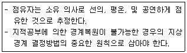
- 구분설
- 평분설
- 점유설
- 보완설
(정답률: 68%)
62. 국가의 재원을 확보하기 위한 지적제도로서 면적본위 지적제도라고도 하는 것은?
- 과세지적
- 법지적
- 다목적지적
- 경제지적
(정답률: 64%)
63. 토렌스 시스템의 기본 이론이 아닌 것은?
- 거울이론
- 커튼이론
- 교환이론
- 보험이론
(정답률: 86%)
64. 다음 중 오늘날의 등기와 동일한 효력을 가진 증서가 아닌 것은?
- 입안(立案)
- 문기(文記)
- 지계(地契)
- 토지가옥증명
(정답률: 64%)
65. 경계의 표시방법에 따른 지적제도의 분류가 옳은 것은?
- 세지적, 법지적, 다목적지적
- 2차원지적, 3차원지적
- 수평지적, 입체지적
- 도해지적, 수치지적
(정답률: 69%)
66. 토지조사사업 당시 일부 지목에 대하여 지번을 부여하지 않았던 이유로 가장 옳은 것은?
- 소유자 확인 불명
- 측량조사작업의 어려움
- 경계선의 구분 곤란
- 과세적 가치의 희소
(정답률: 79%)
67. 지적공부를 상시 비치하고 누구나 열람할 수 있도록 하는 지적 공개주의의 원칙을 채택하고 있는 토지 등록 원칙은?
- 공신의 원칙
- 공시의 원칙
- 토지 공개념
- 소유 상한선제
(정답률: 79%)
68. 전지(田地)를 측량할 때 정방형의 눈들을 가진 그물을 사용하여 전지가 그물 속에 들어온 그물눈을 계산하여 면적을 산출하는 방법은?
- 방전제
- 망척제
- 방량제
- 결부제
(정답률: 82%)
69. 지세징수를 위하여 이동정리를 끝낸 토지대장 중 민유과세지 만을 뽑아서 각 면마다 소유자별로 연기(連記)한 후 이것을 합계한 장부는?
- 지세명기장
- 결수연명부
- 토지대장
- 을호 토지대장
(정답률: 41%)
70. 고구려의 토지 면적 측정에 관한 사항으로 틀린 것은?
- 고구장은 측량에 따른 계산에 관한 문제를 다루었다.
- 면적의 단위로 ‘정, 단, 무, 보’를 사용하였다.
- 방전장은 주로 논이나 밭의 넓이를 계산하였다.
- 토지의 면적 단위는 경무법을 사용하였다.
(정답률: 60%)
71. 임야조사사업의 목적에 해당하지 않는 것은?
- 소유권을 법적으로 확정
- 임야정책 및 산업건설의 기초자료 제공
- 지세부담의 균형 조정
- 지방재정의 기초 확립
(정답률: 50%)
72. 토지조사 당시에 시행 지역에서 멀리 떨어진 산림 지대의 토지를 임야도에 그 지목만을 수정하여 등록한 것을 무엇이라 하는가?
- 간주지적도
- 간주임야도
- 별책지적도
- 산지적도
(정답률: 61%)
73. 토지조사사업 당시의 사정사항은?
- 소유자와 강계
- 지번과 지목
- 지번과 소유자
- 지번과 면적
(정답률: 78%)
74. 다음 중 현존하는 우리나라의 지적자료 중 가장 오래된 것은?
- 신라장적
- 경자양안
- 광무광안
- 결수연명부
(정답률: 73%)
75. 토지조사사업 당시 지권(地券)을 발행한 이유로 가장 거리가 먼 것은?
- 토지의 소유권 보호를 위해서
- 토지로부터 수확량을 측정하기 위해서
- 토지를 매매할 때 소유권 이전에 관하여 공적 소유권증서로 이용하기 위해서
- 토지의 상품화가 이루어지면서 발생하는 토지거래의 문란을 방지하기 위해서
(정답률: 50%)
76. 궁장토의 설정 토지에 해당되지 않는 것은?
- 죄인에게 몰수한 토지
- 영문과 아문의 둔토
- 후손이 없는 노비의 토지
- 공훈을 세운 사람에게 지급한 토지
(정답률: 58%)
77. 우리나라의 지적제도와 등기제도의 비교가 틀린 것은?
- 지적은 토지에 대한 사실관계를 공시하고, 등기는 법적 권리관계를 공시한다.
- 지적과 등기는 모두 실질적 심사주의를 기본 이념으로 한다.
- 지적은 공신력을 인정하지만 동기는 공신력을 인정하지 않고 확정력만을 인정하고 있다.
- 신청방법으로 지적은 단독신청주의를, 등기는 공동신청주의를 채택하고 있다.
(정답률: 63%)
78. 입안을 받지 않은 매매계약서를 무엇이라 하였는가?
- 결연매매
- 지세명기
- 휴도
- 백문매매
(정답률: 72%)
79. 다음 중 현대 지적의 성격과 거리가 먼 것은?
- 역사성과 영구성
- 전문성과 기술성
- 가변성과 비밀성
- 서비스성과 윤리성
(정답률: 73%)
80. 우리나라의 현행 지번 설정에 대한 원칙으로 틀린 것은?
- 북서기번의 원칙
- 아라비아 숫자 지번의 원칙
- 부번(副番)의 원칙
- 종서(縱書)의 원칙
(정답률: 58%)
5과목: 지적관계법규
81. 도시ㆍ군관리계획결정의 고시일로부터 얼마가 되는 날까지 규정에 따른 지형도면의 고시가 없는 경우 그 도시ㆍ구관리계획결정의 효력을 잃게 되는가?
- 1년이 되는 날
- 2년이 되는 날
- 3년이 되는 날
- 5년이 되는 날
(정답률: 28%)
82. 토지의 이동을 조사하는 자가 측량 또는 조사 등에 필요하여 토지 등에 출입하거나 일시 사용함으로 인해 손실을 받은 자가 있는 경우의 손실보상에 대한 설명이 틀린 것은?
- 손실을 받은 자가 있으면 그 행위를 한 자는 그 손실을 보상하여야 한다.
- 손실보상에 관하여는 손실을 보상할 자와 손실을 받은 자가 협의하여야 한다.
- 손실을 보상할 자 또는 손실을 받은 자는 손실보상에 관한 협의가 성립되지 아니하는 경우, 관할 토지수용위원회에 재결을 신청할 수 있다.
- 재결에 불복하는 자는 재결서 정본을 송달받은 날부터 3월 이내에 중앙토지수용위원회에 이의를 신청할 수 있다.
(정답률: 65%)
83. 토지소유자가 하여야 하는 신청을 대신할 수 없는 자는?
- 공공사업에 따라 학교용지의 지목으로 되는 토지인 경우 해당 사업의 시행자
- 국가나 지방자치단체가 취득하는 토지인 경우 해당 토지를 관리하는 행정기관의 장 또는 지방자치단체의 장
- 민법 제404조에 따른 채권자
- 전세권에 의하여 해당 토지를 점유하고 있는 점유자
(정답률: 61%)
84. 다음 중에서 합병신청을 할 수 있는 경우는?
- 합병하려는 토지의 지적도 및 임야도의 축척이 서로 다른 경우
- 합병하려는 각 필지의 지반이 연속되지 아니한 경우
- 합병하려는 토지가 등기된 토지와 등기되지 아니한 토지인 경우
- 합병하려는 토지 전부에 대한 등기원인 및 그 연월일과 접수번호가 같은 저당권의 등기가 있는 경우
(정답률: 64%)
85. 지적측량 적부심사청구를 받은 시ㆍ도지사가 지방지적위원회에 회부하기 전에 조사하여야 하는 사항이 아닌 것은?
- 다툼이 되는 지적측량의 경위 및 그 성과
- 청구 대상 토지의 공시지가 변동 사항
- 해당 토지에 대한 토지이동 연혁
- 해당 토지 주변의 경계 현황 실측도
(정답률: 54%)
86. 지적소관청이 지적공부를 관리하기 위하여 필요하다고 인정되어 직권으로 축척을 변경하기 위해, 축척변경위원회의 의결을 거치기 전 축척변경 시행지역 토지소유자의 동의를 얻어야 하는 기준은?
- 3분의 1 이상
- 4분의 1 이상
- 3분의 2 이상
- 4분의 3 이상
(정답률: 69%)
87. 지적서고의 설치기준이 틀린 것은?
- 골조는 철근콘크리트 이상의 강질로 할 것
- 바닥과 벽은 2중으로 하고 영구적인 방수설비를 할 것
- 전기시설을 설치하는 때에는 단독퓨즈를 설치하고 소화장비를 갖춰 둘 것
- 온도 및 습도 자동조절장치를 설치하고, 연중평균온도는 섭씨 20±5를, 연중평균습도는 55±5퍼센트를 유지할 것
(정답률: 79%)
88. 도시ㆍ군관리계획으로 결정하는 주거지역의 분류 및 설명이 옳은 것은?
- 전용주거지역:양호한 주거환경을 보호하기 위하여 필요한 지역
- 일반주거지역:주거기능을 위주로 일부 상업기능 및 업무기능을 보완하기 위하여 필요한 지역
- 준주거지역:편리한 주거환경을 조성하기 위하여 필요한 지역
- 일반준주거지역:근린지역에서의 일용품 및 서비스의 공급을 위하여 필요한 지역
(정답률: 45%)
89. 지적측량업의 등록 기준이 옳은 것은?
- 특급기술자 1명 또는 고급기술자 3명 이상
- 중급기술자 3명 이상
- 초급기술자 2명 이상
- 지적 분야의 초급기능사 1명 이상
(정답률: 65%)
90. 다음 중 대지권등록부의 등록사항에 해당하지 않는 것은?
- 토지의 소재
- 건물의 명칭
- 토지의 등급
- 소유권 지분
(정답률: 22%)
91. 지적전산자료의 이용 또는 활용 신청 시 자료를 인쇄물로 제공할 때 수수료로 옳은 것은?
- 1필지당 10원
- 1필지당 20원
- 1필지당 30원
- 1필지당 40원
(정답률: 72%)
92. 등기절차에 착오 또는 빠진 부분이 있어 원시적인 동기와 실체 관계가 불일치하여 이를 시정하기 위한 동기는?
- 변경등기
- 말소등기
- 주등기
- 경정등기
(정답률: 55%)
93. 지적공부의 복구에 대한 설명으로 틀린 것은?
- 소유자에 관한 사은 지적소관청이 직권으로 조사하여 복구한다.
- 측량결과도를 복구자료로 활용할 수 있다.
- 토지이동정리결의서를 복구자료로 활용할 수 있다.
- 지적소관청은 복구하려는 토지의 표시 등을 시ㆍ군ㆍ구 게시판 및 인터넷 홈페이지에 15일 이상 게이해야 한다.
(정답률: 48%)
94. 축척변경에 따른 청산금을 산정한 결과 증가된 면적에 대한 청산금의 합계와 감소된 면적에 대한 청산금의 합계에 차액이 생긴 경우 부족액은 누가 부담하는가?
- 지반자치단체
- 지적소관청
- 등가된 면적이 토지소유자
- 국토교통부장관
(정답률: 58%)
95. 주거기능 보호나 청소년 보호 등의 목적으로 청소년 유해시설 등 특정시설의 입지를 제한할 필요가 있는 경우에 지정하는 용도지구는?
- 개발진흥지구
- 특정용도제한지구
- 시설보호지구
- 보존지구
(정답률: 63%)
96. 고의로 지적측량성과를 사실과 다르게 한 자에 대한 벌칙 기준이 옳은 것은?
- 300만원 이하의 과태료
- 1년 이하의 징역 또는 1천만원 이하의 벌금
- 2년 이하의 징역 또는 2천만원 이하의 벌금
- 3년 이하의 징역 또는 3천만원 이하의 벌금
(정답률: 55%)
97. 지목의 구분 기준이 틀린 것은?
- 산림 및 원야를 이루고 있는 수림지는 “임야”이다.
- 묘지의 관리를 위한 건축물의 부지는 “대”이다.
- 정비공장 안에 설치된 송유시설 부지는 “주유소용지”이다.
- 자연의 유수가 있거나 있을 것으로 예상되는 토지는 “하천”이다.
(정답률: 50%)
98. 다음 중 대한지적공사의 정관에 포함되어야 하는 사항이 아닌 것은?
- 목적과 명칭
- 조직 및 기구에 관한 사항
- 지적측량업자의 교육에 관한 사항
- 공고의 방법에 관한 사항
(정답률: 40%)
99. 「주택법」에 따른 주택건설사업의 시행자가 파산 등의 이유로 토지의 이동 신청을 할 수 없을 때에는 누가 이를 신청할 수 있는가?
- 주택의 시공을 보증한 자 또는 입주예정자
- 해당 토지를 관리하는 지방자치단체의 장
- 공유자가 선임한 대표자
- 채권자
(정답률: 44%)
100. 대한지적공사가 추진할 수 있는 사업이 아닌 것은?
- 지적전산자료의 국내ㆍ외 유통사업
- 지적제도 및 지적측량에 관한 외국기술의 도입과 국외 진출사업 및 국제교류협력
- 지적제도 및 지적측량에 관한 연구ㆍ교육 등 지원사업
- 지적전산자료를 활용한 정보화사업
(정답률: 53%)